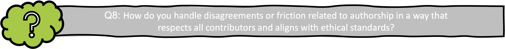

Good Research Practice
1. Introduction to Good Research Practice
Reading time: 5 min Reflection question #: 1, 2
Good research practice (GRP) is defined as “the collective ethical criteria on how good research should be conducted” (VR, 2024), and encompasses a range of ethical standards and guidelines that govern the conduct of research across disciplines. Adhering to GRP while conducting research is crucial, as it ensures the credibility and reliability of research findings, fosters the public’s trust in science, upholds the ethical treatment of research subjects, and respects the broader societal impact of scholarly work. Thus, conducting high quality research requires adherence to GRP (VR, 2024).
In Sweden, the responsibility of researchers to follow GRP is enshrined in national legislation, such as:
Swedish researchers are further expected to adhere to a set of well-established, non-legally-binding research integrity and ethics guidelines, most notably:
and also documents such as:
Finally, many research institutions have formulated codes of conducts they expect all employees to adhere to, for example:
Adhering to GRP as a researcher means not only refraining from violating these laws and guidelines, but also practicing research with a keen awareness of applicable regulations, as well as relying on personal moral judgement.
The responsibility for upholding GRP is shared by all actors in research performing organizations. On a higher level, it is up to the research performing organization to create a good research environment, for example by (SUHF, 2023):
- Training and mentoring in GRP
- Supporting functions (e.g. by producing guidelines)
- Infrastructure and (technical) support (e.g. by setting up clear procedures)
- Incentive structures (e.g. by rewarding adherence to GRP)
It is also the responsibility of the research performing organization to ensure academic freedom for individual researchers, a protection that is enshrined in Swedish law (Law 1992:1434. The higher education act (‘Högskolelag’)). However, this academic freedom comes with the responsibility for individual researchers to uphold research integrity (Section 4 of Law 2019:504). GRP is not uniform across all fields; ethical considerations and legal requirements may vary depending on the subject area. It is thus the researchers own responsibility to ensure familiarity with regulations and guidelines, continuously update knowledge when changes occur, and understand how these principles are applied in specific research areas.
You as a researcher much have:
- good knowledge of the framework and starting points for GRP
- the ability to apply principles and rules in practice and with regard to various legitimate interests and demands
- good professional judgement
- good research habits
- the ability to resist temptations and undue influence
- the ability to handle ethical challenges
2. GRP in acquiring funding
Reading time: 2 min Reflection question #: 3
GRP extends to the responsible and ethical use of research funding and resources. Researchers must strive to:
- maximize the value of research while minimizing waste of time and resources
- avoid unnecessary harm, risk, or suffering
Funding applications should clearly demonstrate how the proposed research has the potential to generate valuable knowledge and/or societal benefit. Conducting research with no such potential is inconsistent with GRP.
When applying for grants, such as those offered by e.g. the Swedish Research Council (Vetenskapsrådet), Horizon Europe, and the ERC, researchers must reflect on ethical aspects early in the planning phase of their projects. Applications must address both legal requirements and broader ethical considerations. This includes:
- identifying potential ethical challenges
- describing how ethical issues will be managed
- describing how compliance with relevant regulations will be ensured
- justifying why the research should be conducted
See e.g. VR ‘Conducting ethical research’, Horizon Europe ‘Ethics self-assessment guide’, and ERC ‘Ethics guidance’ for requirements surrounding ethical reflections in grant proposals.
In summary: adherence to ethical standards in funding applications is essential for fostering trust and accountability in research. By addressing ethical issues transparently and comprehensively, researchers contribute to the responsible use of funding and uphold the integrity of the research process.
3. GRP in experimental research
Reading time: 15 min Reflection question #: 4, 5
Conducting experiments ethically and responsibly is a cornerstone of GRP. The ALLEA Code specifies four fundamental principles as the basis for how all research -regardless of discipline- should be conducted:
- Reliability in ensuring the quality of research, reflected in the design, methodology, analysis, and use of resources
- Honesty in developing, undertaking, reviewing, reporting, and communicating research in a transparent, fair, full, and unbiased way
- Respect for colleagues, research participants, research subjects, society, ecosystems, cultural heritage, and the environment
- Accountability for the research from idea to publication, for its management and organisation, for training, supervision, and mentoring, and for its wider societal impacts
When conducting research according to these fundamental principles, researchers must always balance various legitimate interests (VR, 2024):
- the pursuit of valuable knowledge
- the protection of those affected by research
- the promotion of openness and transparency
- the maintenance of trust in the research process
Among these, the protection interest - safeguarding the health, safety, and well-being of not only research participants, but everyone who is affected by research in various ways - ALWAYS take precedence over all other considerations.
Direct risks associate with research include physical interventions (e.g., surgical procedures, drug administration), methods causing psychological distress, and improper handling of sensitive materials or information. All researchers must be aware of these risks and mitigate them in any way possible.
Apart from these general foundations of GPR in conducting research, there are several special areas of ethical interest, that will be discussed in the following subchapters.
Research involving humans
Research involving humans can take various forms, such as interviews, observations, interventions, experiments, or the collection and processing of data (e.g. personal data). Regardless of its nature, all such research must strictly adhere to ethical principles and undergo some form of ethical review.
A fundamental framework for ethical considerations in research involving humans is based on the four principles of medical ethics:
- To do good
- To do no harm
- To respect self-determination (autonomy, informed consent)
- To uphold justice
Further essential guidelines for conducting ethical human research are provided in the Declaration of Helsinki and the Swedish Ethical Review Act (2003:460 ‘om etikprövning av forskning som avser människor’).
Clinical studies in Sweden are regulated under EU Regulation 536/2014. Clinical studies funded by certain agencies (such as VR) must be registered in public study registries or databases, such as ClinicalTrials.gov or Researchweb. Additionally, clinical research projects that involve exposing participants to ionizing radiation require approval from a local radiation protection committee, in accordance with the Swedish Radiation Safety Authority’s regulations (‘Strålsäkerhetsmyndigheten’, SSMFS 2018:1).
For other studies involving humans, researchers must seek ethical approval from the Swedish Ethical Review Authority (‘Etikprövningsmyndigheten’). The Ethical Review Authority has provided guidelines on how ethical principles are applied in reviews and what this entails when planning and conducting research involving humans. If The Ethical Review Authority issues an unfavorable decision, it can be appealed to the Ethics Review Appeals Board (‘Överklagandenämnden för etikprövning’).
To gain access to human samples for research, not only an approved ethics application is required, but also a biobank application in accordance with the Biobank Act (2023:38, ‘biobankslag’).
Research involving animals
Research involving laboratory animals is regulated by multiple guidelines that researchers must adhere to, including:
- the Animal Welfare Act (2018:1192 ‘djurskyddslag’)
- the Animal Welfare Ordinance (2019:66, ‘djurskyddsförordning’)
- regulations from the Swedish Board of Agriculture (SJVFS 2019:9)
Only animals specifically bred for research purposes (destination breeding) are permitted for use.
Before conducting animal experiments, researchers are required to obtain ethical approval from a regional animal experimentation ethics committee, via submitting an application at an e-service provided by the Swedish Board of Agriculture (Jordbruksverket). Upon obtainment of a license, experiments may only be executed by staff/researchers that have the necessary formal training in Laboratory Animal Science (LAS).
As outlined by the Swedish 3R center, experiments involving animals must comply with the 3Rs principle:
- Replace animal use where possible
- Reduce the number of animals used
- Refine methods to minimize suffering
Furthermore, Researchers must design experiments to ensure animal welfare and follow international guidelines, such as PREPARE and ARRIVE.
Genetic engineering
For research involving genetic engineering, adherence to stringent safety, ethical, and environmental standards is needed. Relevant Swedish laws include:
- 2006:351 on Genetic Integrity etc. ‘om genetisk integritet m.m.’
- 2002:1086 on the Release of Genetically Modified Organisms into the Environment ‘om utsättning av genetiskt modifierade organismer i miljön’
- 2000:271 on the Contained Use of Genetically Modified Organisms ‘om innesluten användning av genetiskt modifierade organismer’
- DS2000:61 the Environmental Code
See the Swedish Board of Agriculture (‘Jordbruksverket’), the Medical Products Agency (‘Läkemedelsverket’), the Swedish Work Environment Authority (‘Arbetsmiljöverket’), the Gene Technology Advisory Board (‘Gentekniknämnden’) and the National Council on Medical Ethics (‘Statens medicinsk-etiska råd’) for more information.
Development/use of certain type of technology
The development and application of certain technologies come with specific risks and ethical challenges. A common issue with emerging technologies is that their rapid advancement and dissemination can sometimes overshadow important ethical discussions. Therefore, researchers involved in developing new technologies should carefully consider additional ethical questions, as outlined in VR, 2024.
Dual-use items
Products, technology and information that can have both civilian and military uses are called dual-use items, or ‘produkter med dubbla användningsområden’ (PDA). To prevent misuse of these items, compliance with European (EU 2021/821, EU 2021/1700) and Swedish (Act 2000:1064) research and export rules is crucial, outlined further by the Inspectorate for Strategic Products ‘inspektionen för strategiska produkter’.Artificial intelligence
When using AI tools, researchers must consider privacy, confidentiality, and intellectual property rights, particularly when handling sensitive or personal data. Within the EU, AI usage is regulated by specific legislation, and the European Commission has issued guidelines on AI ethics and responsible use in research. To ensure ethical compliance, researchers should follow data protection laws and adhere to established guidelines when integrating AI into their work.
Processing of personal data (GDPR)
The processing of personal data in research is governed by GDPR (2016/679 EU Data Protection Regulation) and related national regulations (2018:218 Supplementary provisions to the EU General Data Protection Regulation, ‘kompletterande bestämmelser till EU:s dataskyddsförordning’).
Researchers are required to register projects in which personal data are processed with the university’s data protection officer (‘dataskyddsombud’). Personal data includes any information that can be traced back to a living individual, even if identification requires additional data such as a code key, text material, or an audio recording.
In addition to the fundamental principles outlined in Article 5 of the GDPR, specific requirements govern how personal data may be processed in research to protect the rights and freedoms of individuals, as stated in Article 89.1. If the research involves sensitive personal data or data related to legal violations, special rules apply, and researchers must obtain approval under the Swedish Ethical Review Act before starting their work.
4. GRP in (inter)national collaboration
Reading time: 5 min Reflection question #: 6, 7
In academia, collaborations with both fellow researchers and external actors are essential for generating ideas, fostering creativity, and driving innovation. Adhering to GRP during these collaborations is crucial to ensure transparency, ethical conduct, and professionalism, while also ensuring compliance with relevant laws and guidelines. This commitment helps maintain trust among all parties involved and ensures the collaboration remains productive and responsible.
The subchapters below offers guidance on how to adhere to GRP in collaborative research efforts.
Collaboration with non-academic actors in society
Researchers in a wide variety of fields collaborate with non-academic societal actors, such as governments, businesses, and NGO, to:
- address complex societal challenges
- co-create knowledge
- develop innovative solutions
- ensure that research outcomes have practical applications and tangible benefits for communities, industries, and policymakers
These collaborations with societal actors require special attention to ensure:
- A clear division of responsibilities
- Monitoring how research affects operations of the involved organizations beyond the primary research object
- Sensitivity to power imbalances or conflicts that could affect the research or stakeholders
International collaboration
In addition to collaborating with societal actors, many researchers collaborate internationally to exchange knowledge and/or material. Research conducted across borders requires adherence to regulations of all involved countries, as well as a nuanced understanding of cultural, political, and economic differences. In order to ensure “responsible internationalization” (see STINT for more information), researchers and research performing organizations must:
Identify and apply relevant ethical principles and regulations for each collaboration, ensuring proper planning in accordance with these standards.
Avoid so called “ethical dumping”, ensuring research outside Sweden respects Swedish ethical guidelines even when local regulations are more permissive, thereby protecting humans, animals, and the environment.
Clearly define issues of ownership and responsibility for material (including data), and how participants’ intellectual property rights will be protected.
Establish mechanisms to address conflicts and deviations from good research practice.
For guidance on ethical issues in international collaborations, the Association of Swedish Higher Education Institutions (SUHF) has developed a checklist, and researchers are further encouraged to apply the TRUST code to ensure equitable global research partnerships.
When using genetic resources or traditional knowledge from abroad, compliance with the Nagoya Protocol, EU Access and Benefit Sharing Regulation, and national laws is mandatory. Researchers must document and verify access under the supplier country’s rules, using tools like the EU DECLARE platform for due diligence. For more information, see Naturvårdsverket.
All together, these practices foster responsible research that respects global ethical standards and promotes trust across borders.5. GRP in publishing and reviewing
Reading time: 7 min Reflection question #: 8, 9
Writing
The scientific publication is often the primary form in which research results are communicated. Ensuring transparency, honesty, and responsibility in publishing and other forms of scientific communication is thus pivotal. According to VR (2024), GRP in scientific publishing entails:
- Presenting data, methods, results and interpretations in an open, honest, transparent and correct manner, while meeting the interest in protection and legitimate demands for confidentiality
- clearly reporting study robustness, assumptions and values, sources of error and remaining uncertainties and knowledge gaps
- referring and citing clearly and correctly, in accordance with the standard that applies to the research area
- openly reporting any conflicts of interest, financial support and dependencies
- preventing the dissemination and use of incorrect results or misleading information
Authorship
During manuscript writing, questions surrounding authorship often cause friction. The Vancouver recommendations provide a framework of criteria on what constitutes a contribution sufficient to warrant co-authorship, namely:
- Substantial contributions to the conception or design of the work; or the acquisition, analysis, or interpretation of data for the work; AND
- Drafting the work or reviewing it critically for important intellectual content; AND
- Final approval of the version to be published; AND
- Agreement to be accountable for all aspects of the work in ensuring that questions related to the accuracy or integrity of any part of the work are appropriately investigated and resolved

If AI tools are used to generate text or content, this must always be disclosed, and researchers must ensure the reliability of such contributions.Journal selection
When approaching journals, researchers should only engage with those that adhere to rigorous, established peer-review standards, avoiding those that violate these requirements. Researchers shall also ensure that their work is made accessible to peers and the public promptly, however respecting legitimate delays (e.g., patents).Peer review
When reviewing manuscripts from peers, researchers must commit to ethical practices as outlined in the Committee on Publication Ethics (COPE) ethical guidelines, and must primarily ensure that:
- their review is honest
- their assessment is well-founded
- they report any conflicts of interest
- they refrain from participating in both the process and decisions when there is a risk of undue influence
6. Scientific misconduct
Reading time: 10 min Reflection question #: 10, 11
Causes of misconduct
Adhering to GRP is vital for producing credible research, maintaining public trust, ensuring ethical integrity, and practicing societal responsibility, yet various factors can lead researchers to deviate from the laws, guidelines and principles outlined in chapters 1-5 of this module. Within the scientific community, several elements increase the likelihood that researchers deviate from GRP. An example is the element of competition in research, which can pressure researchers to compromise on GRP. In addition, evaluation systems that rely heavily on quantitative indicators (e.g., number of publications, citation counts) can incentivize shortcuts. Understanding these factors contributing to deviations from GRP, and how to mitigate them, is pivotal.
In some instances, causes for deviations from GRP can be reasonably unintentional and benign, such as:
- Ignorance: Lack of awareness of ethical research practices
- Negligence: Carelessness in methodology or reporting
- Stress and Pressure: High expectations, deadlines, or resource limitations
- Poor Research Habits: Developing methods or attitudes inconsistent with ethical guidelines
In other more severe cases, researchers might deliberately bypass ethical practices to manipulate outcomes.
The following subchapters will explore various types of GRP breaches and the procedures for addressing suspected misconduct in Sweden.
Types of misconduct
In section 2 of Act 2019:504, research misconduct is defined as:
“a serious deviation from good research practice in the form of fabrication, falsification or plagiarism committed intentionally or through gross negligence in the planning, implementation or reporting of research”
The core types of research misconduct (fabrication, falsification, and plagiarism (FFP)) are defined as follows:
- Fabrication: Creating false data or results and presenting them as real.
- Falsification: Manipulating materials, equipment, processes, or data to misrepresent the research. Includes changing, omitting or suppressing data without justification.
- Plagiarism: Using another person’s ideas, processes, results, or words without proper attribution, thus violating intellectual property rights.
While fabrication and falsification always (in principle) constitute serious breaches of GRP and are thus classified as misconduct, a minor occurrence of plagiarism might not be considered a serious breach if done unintentional or not through gross negligence.
In addition to FFP, there are a wide variety of scenarios that constitute smaller breaches of GRP. Below are examples of some (but not all) of these scenarios:
- Failing to verify sources or data adequately
- Conducting insufficient experiments to ensure reliability
- Misattributing authorship in publications
- Conducting research without the necessary permits or ethical safeguards
- Reusing one’s own prior work without proper acknowledgment
- Presenting results inaccurately or incompletely
- Concealing AI use in content creation
- Refusing to share results without valid reasons
- Misrepresenting statistical significance
- Hindering the research efforts of peers
Procedures for handling suspicions of misconduct
As per Act 2019:504, suspected misconduct fitting the legal definition (FFP) is handled by the National Board for the Assessment of Research Misconduct (Npof) (Nämnden för prövning av oredlighet i forskning). Cases outside Npof’s jurisdiction (i.e., deviations from GRP that don’t fit the definition of research misconduct) are managed by the researcher’s institution, such as a university, following the Higher Education Ordinance (1993:100) (högskoleförordningen). Institutions are required to establish clear guidelines for such examinations according to recommendations from SUHF.
There are three ways in which a report of suspicion of misconduct can be initiated at Npof:
- Through a submission from a research performing organization
- Through a direct notification from an individual
- on Npofs initiative based on its own observations
The Act (2021:890) on whistleblower protection ensures safeguards for those reporting suspected misconduct. Further guidance is available in the Whistleblower Protection Handbook.
After a case has been investigated according to procedure at Npof or a higher education institution, a decision on a deviation from GRP can have various consequences for the researcher, such as:
- Employment measures:
- warnings, salary deductions or dismissal
- warnings, salary deductions or dismissal
- Academic sanctions:
- correction or withdrawal of published articles
- suspension of grant payments
- reclamation of previously received research funding
- limitation to the ability of researchers to apply for or receive new grants
- correction or withdrawal of published articles
- Legal liability:
- reprimands, warnings, injunctions, prohibitions, fines, administrative sanctions
- imprisonment or fines for criminal offenses (e.g., conducting research without required permits)
In addition, some wider impacts on science and society may be seen, for example:
- Reduced trust in the research community and public perception of science
- Dissemination of incorrect results and waste of resources
- Harm to people, animals, or the environment due to flawed research outcomes
All types of research misconduct undermine scientific integrity and trust. Researchers must therefore adhere to ethical standards, avoid intentional or negligent deviations, and maintain transparency and accountability in all aspects of their work.
7. GRP and Open Science
Reading time: 7 min Reflection question #: 12,13
Why Open Science
Openness in science, specifically referring to the practice of openly sharing methods, protocols, data, results, publications, and educational materials, can help promote various aspects of GRP by:
- enhancing research quality by encouraging peer review and reducing errors
- building public trust and accountability in scientific work
- minimizing publication bias and unnecessary repetition of studies
- facilitating more effective collaborations and resource utilization
For these reasons, GRP encourages researchers to provide other researchers and the public with as much insight into their work as possible. To ensure respect for and protection of individuals, this approach adheres to the principle of “as open as possible, as closed as necessary”.
“Allmän handling”
In Sweden, the principle of academic openness is enshrined in law 1949:105 (the Freedom of the Press Ordinance (‘tryckfrihetsförordning’)), which dictates the public’s (‘allmänhetens’) right to transparency. In practice this means that everyone has the right to access public documents (‘allmänna handlingar’) which are not classified as confidential. ‘Public documents’ are all documents that are received by or prepared at a public authority (e.g. a university, college, or other governmental agency) and stored there.
Anyone who requests access to a public document has the right to remain anonymous and does not usually have to state what the document or information will be used for. If access to a public document is denied by a public authority, individuals can demand a written decision from the authority and appeal it to the Court of Appeal (‘Hovrätt’). The right to access public documents can only be limited by the Public Access and Secrecy Act (2009:400 ‘offentlighets- och sekretesslag’). Under the Archives Act (1990:782 ‘arkivlag’), research materials classified as public documents must be preserved, organized, and maintained to support public insight, judicial processes, and further research.Data sharing
Data sharing is integral to open science, with the aim of making research data as accessible and reusable as possible. In Sweden, a recent law (Act 2022:818 on the public sector’s access to data (‘om den offentliga sektorns tillgängliggörande av data’)) encourages the public sector to make research data openly available.
When sharing data, researchers should follow the FAIR principles:
Findable
Accessible
Interoperable
Reusable
The Swedish Research council has developed guidelines for FAIR data management, as well as a template for the creation of data management plans.
When sharing data, researchers must be mindful that openness must always be balanced against the need for protection, especially regarding sensitive data. Law 2009:400 limits how universities and other authorities can share information to ensure confidentiality, which means, among other things, that researchers must manage research information to minimize risks and comply with applicable rules, and carefully weigh the value of making the information available (the interest in transparency) against the risks (the interest in protection).
When full openness is not possible, GRP describes alternative approaches:
- Sharing only the data’s metadata
- Sharing partial data sets
- Sharing only the data’s public information, omitting the confidential part
Information that is deemed confidential should be stored securely for release upon request, after confidentiality review if required.
Other data that do not fall under law 2002:818 include data covered by sole rights, for example according to patent legislation (1967:837 Patent law), or that a third party has rights over according to copyright legislation (1960:729 on Copyright in Literary and Artistic Works).
By embracing openness within the framework of good research practice, researchers can foster trust, ensure ethical responsibility, and contribute to scientific progress while safeguarding sensitive information.
References
Laws and regulations
1949:105. The Freedom of the Press Ordinance‘tryckfrihetsförordning’, Justitiedepartementet, 1949
1960:729 on Copyright in Literary and Artistic Works, ‘om upphovsrätt till litterära och konstnärliga verk’, Justitiedepartementet, 1960
1967:837 Patent law, ‘Patentlag’, Justitiedepartementet, 1967
1990:782 Archives Act ‘arkivlag’, Kulturdepartementet, 1990
1992:1434. The Higher Education Act‘Högskolelag’,Utbildningsdepartement, 1992
1993:100. Higher Education Ordinance ‘högskoleförordning’, Utbildningsdepartement, 1993
2000:271 on the Contained Use of Genetically Modified Organisms ‘om innesluten användning av genetiskt modifierade organismer’, Klimat- och näringslivsdepartementet, 2000
2000:1064 on the control of dual-use items and technical assistance) ‘om kontroll av produkter med dubbla användningsområden och av tekniskt bistånd’, Utrikesdepartementet, 2000
2002:1086 on the Release of Genetically Modified Organisms into the Environment ‘om utsättning av genetiskt modifierade organismer i miljön’ Klimat- och näringslivsdepartementet, 2002
2003:460 Swedish Ethical Review Act ‘om etikprövning av forskning som avser människor’, Utbildningsdepartement, 2003
2006:351 on Genetic Integrity etc. ‘om genetisk integritet m.m.’ Socialdepartementet, 2006
2009:400 Public Access and Secrecy Act ‘offentlighets- och sekretesslag’, Justitiedepartementet, 2009
2018:218 Supplementary provisions to the EU General Data Protection Regulation, ‘kompletterande bestämmelser till EU:s dataskyddsförordning’, Justitiedepartementet, 2018
2018:1192 the Animal Welfare Act ‘djurskyddslag’, Landsbygds- och infrastrukturdepartementet RSL, 2018
2019:66 the Animal Welfare Ordinance ‘djurskyddsförordning’, Landsbygds- och infrastrukturdepartementet RSL, 2019
2019:504. the Act on Responsibility for Good Research Practice and the Examination of Research Misconduct ‘lagen 2019:504 om ansvar för god forskningssed och prövning av oredlighet i forskning’, Utbildningsdepartement, 2019
2021:890. On whistleblower protection ‘Lag om skydd för personer som rapporterar om missförhållanden’, Arbetsmarknadsdepartementet ARM, 2021
2022:818 On the Public Sector’s Access to Data ‘om den offentliga sektorns tillgängliggörande av data’, Finansdepartementet, 2022
2023:38 Biobank Act, ‘biobankslag’, Socialdepartementet, 2023
2024:1689 laying down harmonised rules on artificial intelligence, European Union, 2024
EU 511/2014 Access and Benefit Sharing Regulation European Union, 2014
EU 536/2014 Clinical trial regulation, European Union, 2014
EU 2016/679 Data Protection Regulation (GDPR), European Union, 2016
EU 2021/821 setting up a Union regime for the control of exports, brokering, technical assistance, transit and transfer of dual-use items, European Union, 2021
EU 2021/1700 on internal compliance programmes for controls of research involving dual-use items, European Union, 2021
SSMFS 2018:1, ‘Strålsäkerhetsmyndigheten’, 2018
2019:9 SJVFS regulations and general advice on laboratory animals föreskrifter och allmänna råd om försöksdjur, Jordbruksverket, 2019
DS2000:61 the Environmental Code Klimat- och näringslivsdepartementet, 2015
Guidelines
- The ARRIVE guidelines 2.0: Updated guidelines for reporting animal researchPercie du Sert N, Hurst V, Ahluwalia A, Alam S, Avey MT, Baker M, et al. (2020) PLOS Biology 18(7)
- COPE Ethical Guidelines for Peer Reviewers COPE Council, 2017
- the Declaration of Helsinki World Medical Association, 2024
- European Code of Conduct for Research Integrity ALLEA, 2023
- Global responsible engagement: checklist the Association of Swedish Higher Education Institutions (SUHF), 2023
- Good Research Practice ‘God forskningssed’, VR, 2024
- Guidelines on the responsible use of generative AI in research developed by the European Research Area Forum, European Commission, 2024
- Guidance for higher education institutions’ work to prevent, manage and follow up on suspected deviations from good research practice ‘Vägledning för lärosätens arbete med att förebygga, hantera och följa upp misstankar om avvikelser från god forskningssed’ SUHF, 2023
- Handbook on Whistleblower protection in research European Network for Research Integrity Offices (ENRIO), 2023
- the Nagoya Protocol Convention on Biological Diversity, 2010
- PREPARE: Guidelines for planning animal research and testing) Smith, AJ, Clutton, RE, Lilley, E, Hansen KEA, Brattelid, T. (2018) Laboratory Animals 52(2):135-141
- Recommendations to higher education institutions on how to work with responsible internationalisation The Swedish Foundation for International Cooperation in Research and Higher Education (‘Stiftelsen för internationalisering av högre utbilndning och forskning’), 2022
- SciLifeLabs code of conduct SciLifeLab Operations Office, 2023
- The TRUST code, a global code of conduct of equitable research partnerships TRUST, 2018
- User Guide - DECLARE NAGOYA IT system
- The Vancouver recommendations International Committee of Medical Journal Editors (ICMJE), 2025
Relevant organizations
- Biobank Sverige
- Etikprövningsmyndigheten
- Gentekniknämnden
- Jordbruksverket
- Läkemedelsverket
- Naturvårdsverket
- Npof: Nämnden för prövning av oredlighet i forskning
- Onep: Överklagandenämnden för etikprövning
- Statens medicinsk-etiska råd
- STINT: Stiftelsen för internationalisering av högre utbilndning och forskning
- Strålsäkerhetsmyndigheten
- SUHF: Sveriges universitets- & högskoleförbund
- Vetenskapsrådet